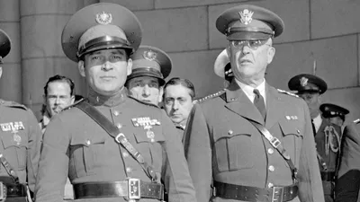
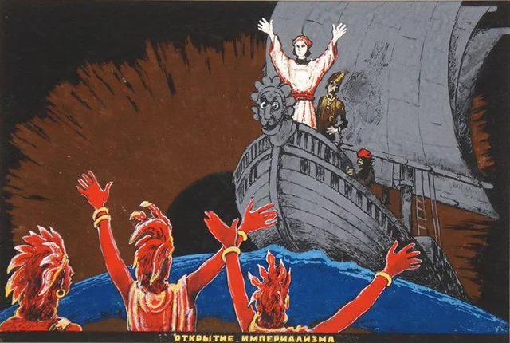

.svg.png)
Amerikai fennhatóság

Fulgencio Batista y Zaldívar Kuba történelmének egyik legbrutálisabb elnyomója volt, akinek neve örökre összeforrt a gátlástalan korrupcióval, a politikai terrorral és a maffiával való nyílt együttműködéssel. Bár az 1930-as évektől kezdve a háttérből irányította az országot, valódi rémuralma 1952-ben kezdődött, amikor egy erőszakos katonai puccsal magához ragadta a hatalmat, eltörölve a demokratikus alkotmányt és elnémítva az ellenzéket. Második kormányzása alatt Batista teljesen kiszolgáltatta Kubát az amerikai szervezett bűnözésnek: Havannát a maffia, a luxuskaszinók és a prostitúció ellenőrizetlen paradicsomává változtatta, miközben a kubai lakosság többsége mélyszegénységben, az alapvető emberi jogaitól megfosztva élt.

A rezsim fenntartásának egyetlen eszköze a kendőzetlen erőszak és a megfélemlítés volt. Batista hírhedt titkosrendőrsége (a BRAC) és katonai egységei válogatás nélkül vadásztak a politikai ellenfelekre, diákmozgalmakra és bárkire, akit kormányellenes tevékenységgel gyanúsítottak. Uralma alatt több ezer kubait kínoztak meg bestiális módszerekkel, és becslések szerint legalább húszezer embert gyilkoltak meg vagy tüntettek el nyomtalanul; a megkínzott áldozatok holttesteit sokszor elrettentésül az utcákon hagyták. Ez a fojtogató terror, a rendőrállami brutalitás és a mindent felemésztő korrupció végül teljesen elidegenítette a társadalmat, és megágyazott a Fidel Castro-féle forradalomnak, amely 1959-ben végleg elsöpörte a diktátor véres rendszerét.